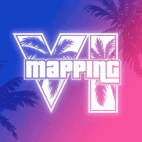
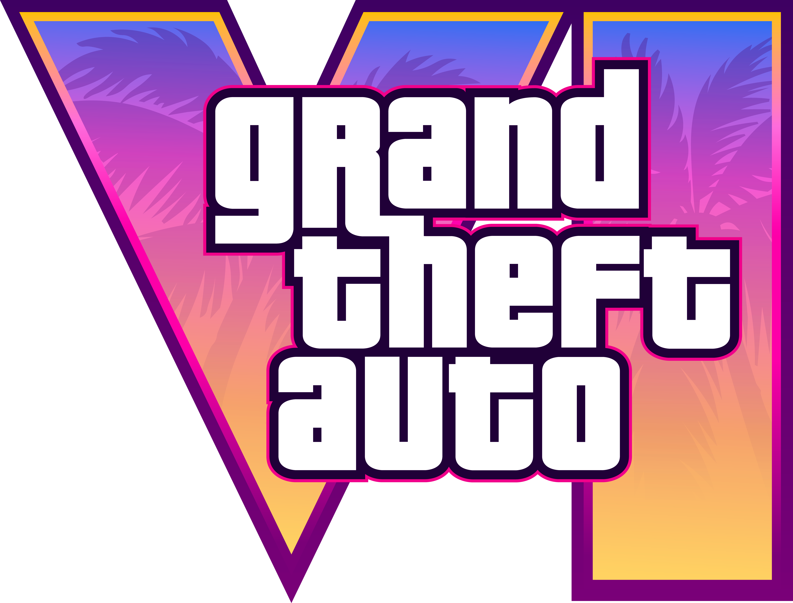

The interactive mapping intelligence hub for Grand Theft Auto VI. Explore Vice City, Port Gellhorn, and the Keys with 21K deep-zoom GIS precision, 500+ triangulated landmarks, trailer comparisons, and 3D assets.
Engineered with customized GIS projections to match Rockstar's Cartesian in-game plane, backed by thousands of hours of collective community research.
Continuous pyramid tiled mapping engine incorporating multiple community projections (high-resolution satellite & topographical overlays). Inspect every highway, airport runway, canal, and back-alley across Vice City and surrounding counties with zero tile lag.
Hotels, bridges, gas stations, and residential zones cross-referenced directly against Trailer 1, Trailer 2, and real Florida counterparts with side-by-side photographic proof.
Toggle seamlessly between in-game Leonida coordinates and real-world Miami OpenStreetMap to see how Rockstar adapted real-life Florida architecture into Vice City.
Test your Leonida geography instincts in a playable mini-game. Pinpoint trailer scenes on the map against a global community leaderboard.
Integrated Three.js WebGL engine allows interactive 360-degree inspection of 3D vehicle models and architectural landmarks, accompanied by 4K trailer frame archives.
Click any key location below to instantly open the interactive map centered and zoomed on that exact coordinate.
The definitive research compilation by the Grand Theft Auto VI mapping community. Triangulating leaked coordinates, trailer frames, and geographic photogrammetry to decode Rockstar Games' largest open world to date.
Based on triangulated in-game coordinate bounds spanning over 25,000 units on the Cartesian plane, Leonida encompasses approximately 125 km² of playable landmass.
Leonida is divided into distinct administrative zones ranging from sun-drenched art deco coastlines to industrial shipping bays and dense subtropical swamps.
Every landmark on our interactive map utilizes mathematical triangulation verified against leaked engine telemetry and official trailer cinematography.
Explore the architectural inspiration behind Rockstar Games' satire. Our dual-layer GIS map overlays real-world Miami and Florida OpenStreetMap data.
Plan cross-county journeys before the game even launches. Calculate travel times across highways and interstates using realistic physics speeds.
The largest interactive repository of GTA 6 points of interest, hotel locations, restaurants, police precincts, and trailer frame easter eggs.
Exhaustive community-verified technical intelligence covering all districts, protagonist heist mechanics, confirmed vehicles, trailer timestamps, and RAGE 9 engine scale.
The State of Leonida is composed of five principal administrative jurisdictions, anchored by the metropolitan expanse of Vice City and extending across dense agricultural wetlands, industrial docklands, and coral reef archipelagos.
| Region / District | County | Cartesian Coordinates | Key Features & Landmarks | Florida Real-Life Analog | Action |
|---|---|---|---|---|---|
| Vice Beach (Ocean Drive) | Leonard County | X: 2803.2 · Y: 1409.4 | Pastel Art Deco hotels, neon nightlife, Muscle Beach gym, high-end boutiques | South Beach / Ocean Drive, Miami Beach | |
| Downtown Vice City | Leonard County | X: 1850.0 · Y: 900.0 | Commercial banking skyscrapers, monorail transit, corporate headquarters | Brickell Financial District & Downtown Miami | |
| Starfish Island | Leonard County | X: 2300.0 · Y: 1650.0 | Gated billionaire mansions, private yacht slips, exotic car collections | Star Island / Palm Island, Biscayne Bay | |
| Port Gellhorn | Port Gellhorn City | X: -8500.0 · Y: -2100.0 | Industrial shipping harbor, motor speedway, pawn shops, rail freight depot | Tampa Bay / Panama City Industrial Port | |
| Kelly County & Ambrosia | Kelly County | X: -4100.0 · Y: 3400.0 | Ambrosia Sugar Cane Mill, dirt tracks, rural communities, agricultural warehouses | Clewiston / Hendry County Sugar Basin | |
| Leonida Keys (Overseas Hwy) | South Leonida | X: -2100.0 · Y: -7800.0 | Seven Mile Bridge causeway, coral atolls, stilt fishing shacks, boat charters | Florida Keys / Key West / Marathon | |
| Grassrivers Wetlands | Central Leonida | X: -1800.0 · Y: -400.0 | Dense cypress swamplands, alligator habitats, airboat channels, secluded cabins | Florida Everglades National Park | |
| Vice City Intl. Airport | Leonard County | X: 1100.0 · Y: -1200.0 | Tri-runway commercial hub, cargo hangers, private aviation terminals | Miami International Airport (MIA) |
Grand Theft Auto VI centers on dual protagonists Lucia Caminos and Jason, operating in a modernized Bonnie-and-Clyde criminal partnership across Leonida.
| Target / Location | Coordinates | Heist Type & Mechanics | Security Response Level | Action |
|---|---|---|---|---|
| Hank's Waffles Diner | X: -8120.0 · Y: -2340.0 | Armed robbery, hostage intimidation, crowd pacification, cash register loot | Port Gellhorn Police Department (2-Star) | |
| Port Gellhorn Pawn & Gun | X: -8430.0 · Y: -2120.0 | Vault drill penetration, glass display smash-and-grab, security camera hacking | Armed security + VCPD SWAT (3-Star) | |
| Leonida Dept. of Corrections | X: -1500.0 · Y: 4800.0 | Lucia opening narrative prologue, maximum security prison yard and parole office | Maximum Penitentiary Lockdown | |
| King Motel Safehouse | X: -8210.0 · Y: -1980.0 | Lucia & Jason hideout, weapon stash, disguise wardrobe, getaway car tuning | Safehouse Zone (Zero Heat) |
Leonida features an expanded automotive, maritime, and aeronautical fleet with fully simulated cabin interiors, working gas gauges, rearview mirrors, and advanced tire deformation physics.
| Vehicle Model | Class / Type | Primary Spawn Territory | Real-World Automotive Inspiration | Source Verification |
|---|---|---|---|---|
| Grotti Cheetah Classic | Supercar | Ocean Drive, Starfish Island | Ferrari Testarossa / 512 TR | Trailer 1 (0:19) & Leaks |
| Pegassi Torero XO | Hypercar | Downtown Vice City Financial District | Lamborghini Countach LPI 800-4 | Trailer 1 (0:22) |
| Bravado Gauntlet Hellfire | Modern Muscle | Port Gellhorn Drag Strip | Dodge Challenger SRT Demon | Trailer 1 (0:46) |
| Grassrivers Airboat | Subtropical Watercraft | Grassrivers Swamps, Lake Leonida | Florida Panther Everglades Airboat | Trailer 1 (0:11) |
| Marquis Luxury Yacht | Superyacht / Marine | Vice Beach Marina, Biscayne Channel | Sunseeker / Azimut 80 Flybridge | Trailer 1 (0:14) |
| Western Dodo Amphibian | Seaplane | Leonida Keys, Key West Harbor | de Havilland Canada DHC-2 Beaver | Trailer 1 (0:09) |
| VCPD Cruiser & Interceptor | Emergency Law Enforcement | All Counties / VCPD Headquarters | Ford Police Interceptor / Taurus | Trailer 1 (1:02) |
Every single second of official Rockstar footage has been triangulated by our cartography team to identify real geographic coordinates across the 21K map canvas.
| Timestamp | Scene Description | Map Coordinates | Key Environmental Easter Egg |
|---|---|---|---|
| 0:05 - 0:12 | Lucia in prison interview with parole officer Stefanie | X: -1500 · Y: 4800 | Leonida Department of Corrections exterior courtyard |
| 0:18 - 0:25 | Vice Beach cruising down Ocean Drive at golden hour | X: 2803 · Y: 1409 | Neon signs: Ocean View Hotel, retro convertibles, Muscle Beach |
| 0:34 - 0:41 | Speedboat cutting through Venetian archipelago canals | X: 2300 · Y: 1650 | High-density particle water wake & realistic foam physics |
| 0:44 - 0:52 | ThrillBilly Mud Club monster trucks & off-road gathering | X: -5200 · Y: 3900 | Volumetric mud displacement & redneck subculture satire |
| 1:05 - 1:18 | Port Gellhorn strip club & street sideshow takeover | X: -8500 · Y: -2100 | Custom rims, smoke particle shaders, viral social media livestreams |
| 1:24 - 1:30 | Lucia and Jason convenience store armed entry: "Trust?" | X: -8120 · Y: -2340 | Bandanas, concealed weapons, dynamic door physics & lighting |
Engineered on Rockstar's proprietary RAGE 9 Engine, Leonida delivers unprecedented scale, volumetric cloud simulation, realistic water buoyancy, and hundreds of fully enterable buildings.
| Grand Theft Auto Title | Estimated Landmass Area | Relative Scale to GTA 6 | Cartesian Grid Range | Interior Enterability |
|---|---|---|---|---|
| State of Leonida (GTA 6) | ~125.0 km² (48.3 sq mi) | 1.00x (Baseline) | ~25,000 × 25,000 units | High (~70%+ accessible public interiors) |
| Grand Theft Auto V (Los Santos) | ~49.4 km² (19.1 sq mi) | 2.53x Smaller | ~16,000 × 16,000 units | Low (Primarily mission-locked interiors) |
| Red Dead Redemption 2 | ~75.0 km² (28.9 sq mi) | 1.66x Smaller | ~18,000 × 14,000 units | Moderate (Saloon, shops, homesteads) |
| GTA San Andreas (2004) | ~38.2 km² (14.7 sq mi) | 3.27x Smaller | ~6,000 × 6,000 units | Low (Requires loading markers) |
| GTA Vice City (2002) | ~9.1 km² (3.5 sq mi) | 13.7x Smaller | ~3,000 × 3,000 units | Minimal (Selected clubs and safehouses) |
Grand Theft Auto VI is developed exclusively for ninth-generation gaming hardware, leveraging ultra-high-speed SSD streaming, hardware-accelerated ray tracing, and high-frequency CPU architectures.
| Target Platform | Target Resolution & Framerate | Confirmed Hardware Features | Release Status |
|---|---|---|---|
| PlayStation 5 | Dynamic 4K / 30 FPS Fidelity & 1440p 60 FPS Performance | DualSense Adaptive Triggers & Haptic Feedback, Tempest 3D Audio | Launch Day (Fall 2025/2026) |
| PlayStation 5 Pro | Enhanced 4K / 60 FPS with PSSR AI Upscaling | Advanced Ray-Traced Reflections & Global Illumination Shading | Enhanced Day One Support |
| Xbox Series X | Dynamic 4K / 30-60 FPS | DirectX Raytracing (DXR), Velocity Architecture Fast Travel | Launch Day (Fall 2025/2026) |
| Xbox Series S | Dynamic 1080p-1440p / 30 FPS | Memory-optimized texture streaming pipelines | Launch Day (Fall 2025/2026) |
| PC (Windows) | Native 4K/8K, Uncapped Framerates, Ultrawide 21:9 / 32:9 | DLSS 3.5, FSR 3, Full Path Tracing, Modding Community Support | Post-Console Release (Expected 2027) |
Everything you need to know about the State of Leonida, GTA 6 map size, coordinates, and community cartography.
The ten essential Leonida briefings — release date, map, trailers, price, platforms and the protagonists — hand-picked from the full Vice Wire archive.
New intel drops every week — the Wire never sleeps.